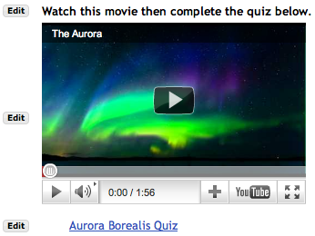
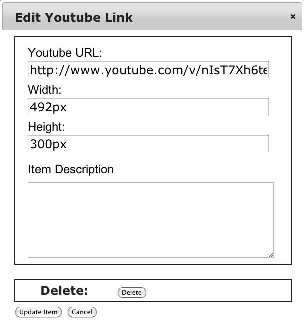

[ Retorna a la pàgina d'ajuda principal]
AFEGIR CONTINGUT MULTIMÈDIA

Pàgina de mostra en la qual, fent ús de Afegeix contingut multimèdia, s'ha afegit un vídeo de Youtube. En el cas de vídeos de Youtube cal anar a la pàgina que mostra el vídeo que us interessa i copiar la URL que apareix a la barra d'adreces del navegador.

Exemple de la finestra que apareix al fer clic sobre el botó Edita.
Podeu afegir a la vostra pàgina pel·lícules, presentacions Flash, vídeos de Youtube, altres espais web, etc.
Si useu Afegeix un recurs apareixeran com un enllaç sobre el que fer clic.
Si useu Afegeix contingut multimèdia apareixeran en una caixa dins de la pàgina. En podeu veure un exemple a la part dreta.
L'eina Lliçons reconeixerà el tipus de fitxer que feu servir i afegirà a la pàgina el reproductor apropiat.
Un cop afegit l'element, segurament caldrà ajustar la mida de la caixa amb el botó Edita. Malauradament l'eina no pot determinar la mida de la pel·lícula o d'altres continguts automàticament, de manera que usa una mida predeterminada "segura". L'eina mostrarà una caixa negra al voltant de l'element, per a que es pugui veure si omple la caixa que hagueu especificat. Els estudiants no veuran aquesta caixa negra.
En el cas de vídeos de Youtube cal anar a la la pàgina que mostra el vídeo que us interessa i copiar la URL que apareix a la barra d'adreces del navegador. No feu ús de l'opció d'incrustar-lo a la pàgina.
Accessibilitat
En relació amb la qüestió de l'accessibilitat en el cas d'usuaris amb discapacitats, assegureu-vos d'usar el botó Edita per afegir descripcions textuals d'imatges i d'objectes multimèdia. També podeu considerar crear una pàgina separada que presenti els continguts de manera més accessible i afegir un enllaç que hi apunti. Una manera de fer-ho és usar l'opció Afegeix una subpàgina.
PREGUNTES FREQÜENTS SOBRE CONTINGUTS MULTIMÈDIA
Precaució amb el navegador Internet Explorer
NOTA: Tot i que l'eina Lliçons és compatible amb Internet Explorer, recomanem usar un altre navegador (per exemple, Firefox) quan prepareu una pàgina usant "Afegeix contingut multimèdia". A causa de la manera com implementa la seguretat Internet Explorer, és possible arribar a una situació en la que IE no us deixi editar la pàgina.
(Si IE troba un problema a la pàgina de vegades no acaba de carregar-la, de manera que les finestres emergents per editar-la no apareixen.)
De la mateixa manera, al treballar amb IE, cal assegurar que cada adreça URL que s'usi a la pàgina comenci amb "https:". Si no és així, els usuaris rebran missatges d'alerta i deixaran de funcionar alguns continguts multimèdia. Si no podeu procedir d'aquesta manera, useu Firefox.
Formats recomanats
Per ara recomanem vídeos amb el format FLV, si no heu d'usar dispositius Apple com iPad. L'eina Lliçons usa un reproductor Flash que funciona raonablement bé.
Si heu de treballar amb dispositius Apple, segurament el millor format és MP4. Tot i això, caldrà preparar de manera especial els fitxers MP4. MP4 té moltes opcions, i no totes funcionen bé amb iPads i iPhones. També cal tenir en compte que no tots els conversors produeixen fitxers que comencin a reproduir-se de forma immediata, enlloc d'esperar a que hagi acabat la descàrrega. Podeu usar Quicktime Pro, i exportar usant el perfil "Movie to iPhone." Finalment, reanomenar el fitxer de .m4v a .mp4.
Malauradament, els experiments amb MP4 a la plataforma Windows produeixen resultats diversos a l'usar els reproductors predeterminats del sistema. Per aquesta raó l'eina Lliçons s'ha configurar per reproduir MP4s usant Flash si està disponible. Recomanem dir als usuaris que instal·lin Flash. Quicktime i Windows Media poden reproduir de vegades fitxers MP4, però amb resultats diversos a Windows. En particular hi ha problemes a fer que els fitxers iniciïn la reproducció de manera immediata quan no està disponible Flash.
Problemes amb la mida de la imatge
Quan s'usa l'opció Afegeix contingut multimèdia habitualment cal ajustar la mida amb el botó Edita. La mida inicial és 300 pixels d'altura i l'amplada completa de la finestra. Aquesta mida ha de permetre veure el contingut però normalment cal ajustar-la per a que coincideixi amb la mida de la pel·lícula o del programa Flash.
Alguns reproductors estiraran o retallaran la imatge si no es configura la mida correcta. És habitual trobar-se amb casos així per exemple amb còpies antigues de Windows Media Player (per exemple a Windows XP). També en el cas de les pel·lícules és més segur ajustar la mida de manera que coincideixi amb la que tingui la pel·lícula.
On es pugen els fitxers
L'opció "Puja el fitxer" normalment desa els fitxers en una carpeta separada per cada instància de l'eina (i.e. cada botó de la barra de l'esquerra). Si preferiu organitzar els fitxers vosaltres mateixos, segurament preferireu pujar els fitxers usant l'eina de Recursos i organitzar-los allà. Podeu usar aleshores "Selecciona un fitxer existent" per afegir el fitxer a una pàgina.
Les adreces URL s'emmagatzemen com a fitxers en una subcarpeta de la corresponent a la unitat anomenada urls .
Per ajudar els vostres usuaris
Malauradament, la capacitat de reproduir pel·lícules, Flash, etc, canvia molt de navegador a navegador. Podeu crear una unitat que tingui tots els tipus de fitxer que vulgueu usar. D'aquesta manera els estudiants es poden assegurar a l'iniciar el curs que tenen instal·lats als seus navegadors els complements adequats.
Problemes coneguts
- EL programa Windows Media Player de Macintosh mostra una imatge en blanc si el fitxer no és públic. Podeu fer públics els fitxers a l'eina de Recursos usant Revisa les propietats. Si us cal que un cert nombre de fitxers siguin públics, podeu fer que la carpeta sencera sigui pública.
- En el cas de Safari en un Macintosh, si editeu un vídeo de Youtube, i canvieu l'adreça URL, quan la pàgina s'actualitza el reproductor desapareix. Si reinicieu la pàgina funciona correctament. El funcionament és correcte en el cas d'usuaris normals.
- Internet Explorer mostrarà missatges d'alerta sempre que el contingut de la pàgina no usi https. Els fitxers emmagatzemats a Sakai es serviran automàticament amb una adreça URL apropiada, però si definiu les adreces URL directament, cal que ho tingueu en compte.
- A Windows, els usuaris hauran d'ajustar la configuració de seguretat del navegador Internet Explorer. Per alguns tipus de reproductors cal habilitar Active X. Pot ser que no hi hagi cap indicació que aquest sigui el problema amb IE, si no que simplement aparegui una caixa buida allà on hauria d'aparèixer el contingut.
- Alguns programes no reproduiran continguts si useu una adreça https i l'espai al qual esteu apuntant no té instal·lat el certificat apropiat.
- Si una extensió del navegador ha de parlar amb l'usuari, pot ser que falli. Per exemple, després d'instal·lar Acrobat, el primer cop que executes el programa cal acceptar la llicència. El navegador Firefox ho demana explícitament. En el cas del navegador Internet Explorer, simplement mostra una caixa buida on hauria d'aparèixer el contingut.